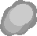
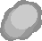
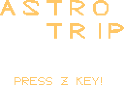
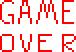
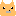
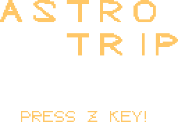
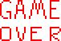
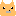

モフを操作して、隕石をよけ、骨を取ろう！！
操作
Z...上昇 X...下降 C...ダッシュ P...ポーズ(一時停止) ※モフには慣性がついていて操作しづらいです。
隕石にあたると一ミス 残機は三つあるけど増やすことも....?
アイテム Bone...200ten GoldBone...600ten Power...1000ten(隕石をけちらせます)
 


 




